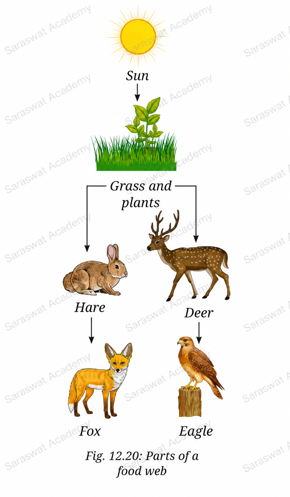

SCIENCE CLASS- 8
CHAPTER-12 (How Nature Works in Harmony)
Question 1. Refer to the given diagram (Fig. 12.19) and select the wrong statement.
Statements:
(i) A community is larger than a population.
(ii) A community is smaller than an ecosystem.
(iii) An ecosystem is part of a community.

Answer: (iii) An ecosystem is part of a community.
Explanation:
The correct order is:
Population → Community → Ecosystem
A population consists of organisms of the same species living in an area.
A community consists of different populations living together.
An ecosystem consists of communities along with non-living components such as air, water, soil and sunlight.
Therefore, a community is part of an ecosystem, not the other way around.
Question 2. A population is part of a community. If all decomposers suddenly disappear from a forest ecosystem, what changes do you think would occur? Explain why decomposers are essential.
Answer:
If decomposers disappear from a forest ecosystem, many serious changes will occur.
- Dead plants and animals will accumulate on the forest floor.
- Organic waste will not decompose.
- Nutrients will not return to the soil.
- Soil fertility will gradually decrease.
- Plant growth will be affected.
- Animals depending on plants for food will suffer.
- The entire food chain may become unstable.
Why are decomposers essential?
Decomposers such as bacteria and fungi break down dead organisms and wastes into simpler substances. These nutrients return to the soil and are reused by plants. Thus, decomposers help in nutrient recycling and maintain ecological balance.
Question 3. Selvam from Cuddalore district, Tamil Nadu, shared that his village was less affected by the 2004 Tsunami because of the presence of mangrove forests. Can you help them understand this?
Answer:
Mangrove forests act as natural barriers against strong sea waves.
The dense network of roots traps sediments and slows down the speed of incoming waves.
During a tsunami, mangrove forests absorb much of the wave energy before it reaches villages and settlements.
As a result:
- Flooding is reduced.
- Soil erosion decreases.
- Damage to houses and crops is minimized.
- Human lives are protected.
Therefore, villages protected by mangrove forests often experience less destruction during coastal disasters.
Question 4. Look at this food chain:
Grass → Grasshopper → Frog → Snake
If frogs disappear from this ecosystem, what will happen to the population of grasshoppers and snakes? Why?

Answer:
If frogs disappear:
- The number of grasshoppers will increase.
- The number of snakes will decrease.
Explanation:
Frogs feed on grasshoppers. Without frogs, fewer grasshoppers will be eaten, causing their population to increase.
Snakes depend on frogs for food. If frogs disappear, snakes will have less food available, resulting in a decrease in their population.
Question 5. In a school garden, students noticed fewer butterflies than the previous season. What could be the possible reasons? What steps can students take to have more butterflies on campus?
Answer:
Possible reasons:
- Use of chemical pesticides.
- Reduction in flowering plants.
- Loss of habitat.
- Pollution.
- Unfavourable weather conditions.
Steps to increase butterfly population:
- Plant more flowering plants.
- Grow native plant species.
- Avoid excessive use of pesticides.
- Maintain small garden habitats.
- Provide water sources for insects.
- Create butterfly-friendly green spaces.
Question 6. Why is it not possible to have an ecosystem with only producers and no consumers or decomposers?
Answer:
An ecosystem requires producers, consumers and decomposers to function properly.
Producers make food using sunlight.
Consumers depend on producers or other consumers for food.
Decomposers recycle nutrients back into the environment.
Without consumers, energy transfer in food chains would stop.
Without decomposers, nutrients would not return to the soil and producers would eventually run out of essential nutrients.
Therefore, all three groups are necessary for a stable ecosystem.
Question 7. Observe two different places near your home or school (e.g., a park and a roadside). List the living and non-living components you see. How are these ecosystems different?
Answer:
(A) Park Ecosystem
Living Components:
- Trees
- Grass
- Birds
- Butterflies
- Insects
- Humans
Non-living Components:
- Sunlight
- Air
- Water
- Soil
- Rocks
(B) Roadside Ecosystem
Living Components:
- Roadside plants
- Dogs
- Crows
- Humans
Non-living Components:
- Road surface
- Dust
- Air
- Sunlight
- Vehicles
Difference:
The park has greater biodiversity and richer vegetation, while the roadside ecosystem has fewer organisms and is more affected by human activities and pollution.
Question 8. "Human-made ecosystems like agricultural fields are necessary, but they must be made sustainable." Comment on the statement.
Answer:
Agricultural fields provide food for the growing population and are therefore essential.
However, unsustainable farming practices can damage soil, water and biodiversity.
Sustainable agriculture should include:
- Balanced use of fertilizers.
- Reduced pesticide use.
- Crop rotation.
- Water conservation.
- Organic farming practices.
- Protection of beneficial organisms.
These methods help maintain productivity while protecting the environment for future generations.
Question 9. If the Indian hare population (Fig. 12.20) drops because of a disease, how would it affect the number of other organisms?
Answer:
The food web shows that Indian hares are important consumers.
If their population decreases:
- Grass and plants may increase because fewer hares will feed on them.
- Predators such as foxes and eagles may decrease because they will have less food available.
- The balance of the ecosystem may be disturbed.
Hence
Changes in one population can affect many other organisms connected through food chains and food webs.
Key Concepts from the Chapter
- Population: A group of organisms of the same species living in a particular area.
- Community: Different populations living together in the same area.
- Ecosystem: Interaction of living organisms with non-living components.
- Producers convert solar energy into food.
- Consumers depend on producers or other consumers for food.
- Decomposers recycle nutrients and maintain ecosystem balance.
- Food chains show the flow of energy from one organism to another.
- Food webs represent interconnected food chains.
- Biodiversity increases ecosystem stability.
- Sustainable practices help preserve ecosystems for future generations.